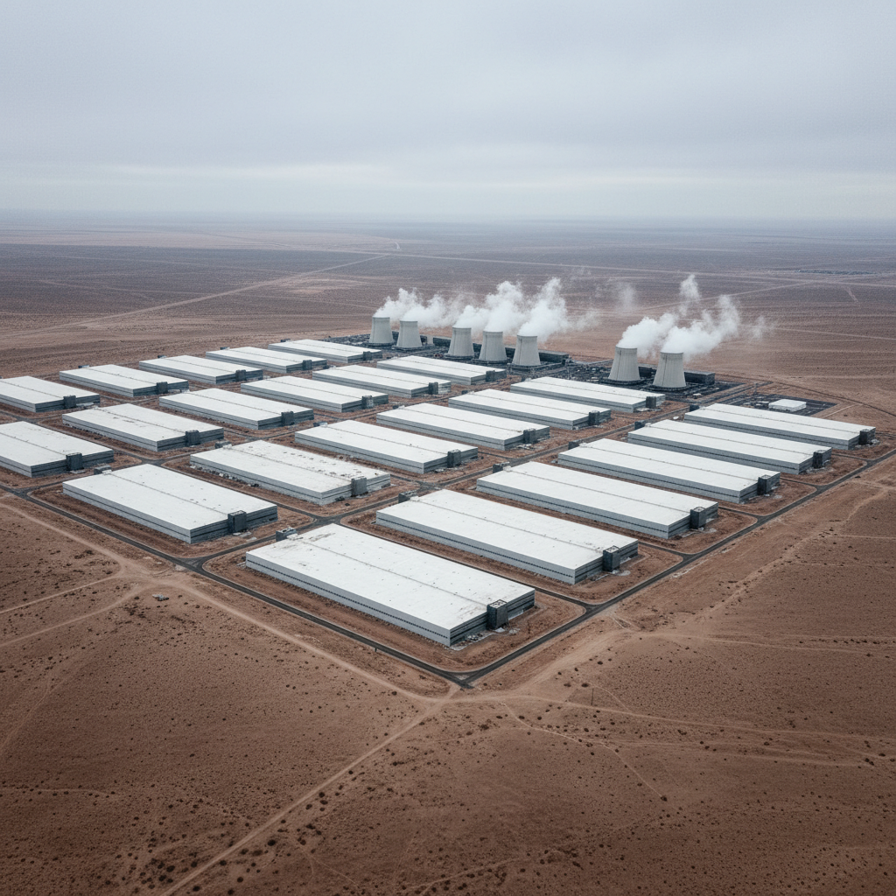

Local AI:
Your Computer, Your Rules
Thomas Jardine
Strategy & Operations · Climate & Clean Energy
One honest note
The exact apps, models, and best practices will keep changing. What I want to give you today is a mental model: what local AI is, when it makes sense, what the tradeoffs are, and one practical way to try it yourself.
What may change quickly
- ✓ Apps and interfaces
- ✓ Model quality and pricing
- ✓ Recommended workflows
What tends to stay true
- ✓ Where the computation happens matters
- ✓ Local and cloud have different tradeoffs
- ✓ Hardware limits are real
AI is already part of how you live


Where does it actually run?

These buildings are hungry.
The Water
Microsoft's water consumption in 2023
About a year's home water use for 55,000 people
+34% in one year, driven largely by AI workloads
Source: Microsoft 2023 Environmental Sustainability Report
The Energy
Projected global data center electricity consumption
That's roughly Japan's entire electricity use
Source: International Energy Agency (IEA), 2024
The point is not one prompt.
It's billions of prompts
adding up in giant data centers.
What if it didn't have to be this way?
Cloud AI
Local AI
You already use local AI
Face ID
Your phone unlocks by matching your face on-device instead of sending that scan to a remote server.
Photo search
Your device can recognize dogs, beaches, receipts, and people inside your photo library without shipping the whole library out.
Self-driving cars
Critical driving decisions have to happen in the car, in real time. Waiting on a cloud round trip would be absurd.
Local AI means the model runs where the data is.
Why is this possible now?
Less power than a lightbulb. Running useful AI on a desktop-sized computer.
💻
Let me show you.
What just happened
That was a real AI model running on this laptop, right here in the room.
Is it always as strong as the newest cloud model? No. But for studying, writing, brainstorming, and private questions, it's already useful.
The honest version
Where it shines
- ● Studying, drafting, brainstorming, everyday questions
- ● Fast enough on a decent laptop
- ● Runs on hardware you already own
Where it falls short
- ● Not as strong as the best cloud models
- ● Larger models can hit memory limits fast
- ● Speed depends a lot on your hardware
- ● The app ecosystem is still early and sometimes rough
Use local for everyday tasks and experimentation. Use cloud when you need the strongest model.
Where do your words go?
Cloud AI
- ● Your prompt leaves your device
- ● May be stored by the service
- ● Privacy depends on provider settings
- ● Could still be requested by courts
Local AI
A private study helper
- ✓ Costs nothing
- ✓ Available 24/7
- ✓ Nobody sees what you ask
- ✓ Helpful for summaries, study questions, and first drafts
What we're about to do today
1. Scan the guide
You do not need to memorize anything. The setup steps are all there.
2. Install the Ollama app
Mac and Windows both work. We just need one working machine per pair.
3. Open the app and try one model
We'll start with llama3.2 so everyone gets a baseline success.
4. Make one useful thing
A study guide, reflection questions, or a small sustainability action plan.
Work in pairs. If one laptop works, your pair is good.
We're using Ollama today because it's a simple starting point. Other good local-first tools include LM Studio, Jan, and GPT4All.
Start here
Step-by-step guide
Install the Ollama app on Mac or Windows
Open chat and try llama3.2
Follow example prompts and task ideas
The app is the default path today. If you like the terminal, the guide includes that too.
Other local-first apps exist too: LM Studio, Jan, GPT4All. We're standardizing on one tool for class so setup is manageable.
Thomas Jardine
Connect on LinkedIn · Let's keep talking
If you get stuck
Default move
- ✓ Pair up with someone nearby
- ✓ One working laptop per pair is enough
- ✓ Ask for help before you burn 10 minutes
Goal for this block
Get the Ollama app open and see llama3.2 answer one message.
If you prefer the CLI, you can still run ollama run llama3.2. If your machine is slow or the install fails, switch to your partner's laptop and keep going.
Success today is per pair, not per person.
Pick one task
Study guide
Paste in notes or a reading and ask for a short study guide in plain English.
Reflection questions
Generate three thoughtful questions you could bring to class discussion.
Sustainability plan
Make a one-week action plan that actually fits student life.
Explain a concept
Ask it to explain one course idea simply, then ask follow-up questions.
Good first prompt: "Summarize this reading in plain language and give me 3 study questions."